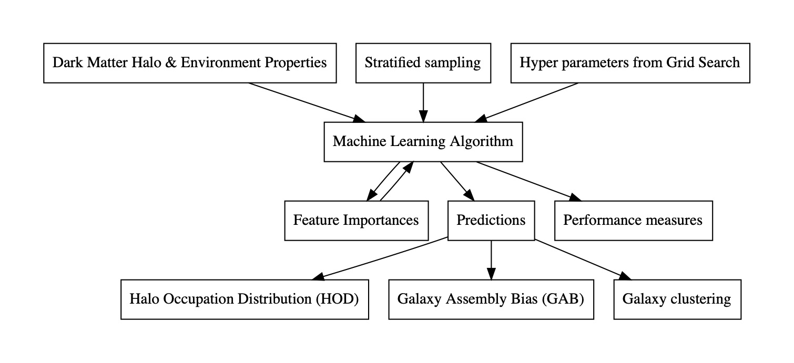

About
This project aims to predict the occupancy of dark matter halos with a central and satellite galaxies. Shown below is an illustration of a dark matter halo: a spherical region in the universe which contains dark matter. The diffuse, bluish glow is the dark matter halo. The spiral galaxy in the center is a central galaxy. The smaller blue dots are sub-halos that contain the satellite galaxies of the central.
What are we trying to solve?
1. Given the properties of a dark matter halo and its environment, such as halo mass, rotational velocity, concentration, spin, etc., how well can one predict whether the halo will be occupied by a central galaxy.2. Similarly, how well can halo properties and environment predict the number of satellite galaxies.
3. We are also interested in determining which halo properties are the most important when predicting the occupancies.
4. We compare the clustering of the original sample of galaxies and the machine learning predictions. Given a random galaxy in a location, clustering describes the probability that another galaxy will be found within a given distance.
5. We compare the assembly bias in the original sample and the ML predictions. Assembly bias is the level at which the assembly history of the galaxies affects their clustering.
Data Source
We are using halo data from the Millenium simulation. On the left hand column is provided a link to the various databases. We work with the Guo2010a data.
Machine Learning Pipeline

Key results from ML
1. We find that halo-mass, mvir, is the most important feature in determining the number of satellites of a central galaxy. This is expected and confirms prior analytical studies.2. For central galaxies though, we find that the maximum circular velocity of the halo, Vmax, is the most important feature in determining whether a halo will be occupied by a central galaxy or not. This is a novel result.
3. As shown in the notebook, we recover the HOD signal extremely well. The clustering signal was also recovered extremely well at the level of 99.8% for centrals and 99.6% for both centrals and satellites. Similarly, the GAB signal is recovered to 98% for centrals and centrals and satellites. More to follow soon...